Программа предназначена для использования в школах. В младших классах она поможет развить мелкую моторику у детей, а также в игровой форме подать им изучаемый материал. Например, показать детям упругое и неупругое соударение(физика): ребёнок сталкивает два шара, они отталкиваются, и на экране тут же появляется описание произошедшего процесса. Или, например, на уроке биологии ребёнок сможет кормить с руки различных животных и запоминать, кто что ест. Также можно сделать настольные игры, к примеру шахматы, с красивыми визуальными эффектами, чтобы детям было интересно играть.
Программа представляет собой игровую платформу, к которой подключаются различные игровые модули. Новый модули разрабатываются по специальному заказу и легко внедряются в приложение. Плюсом является дешевизна установки(конструкции) необходимой для работы программы. Чтобы запустить приложение, достаточно обычной веб камеры, которую можно купить по приемлемой цене в любом магазине электроники. Количество человек, которые одновременно могут использовать приложение, не ограниченно, поэтому дети могут коллективно решать учебную задачу. Это также научит детей работе в команде и взаимопомощи.
david-svitov@yandex.ru
Дети с большой охотой и интересом принимают участие в игре. Многие по нескольку раз подходят поиграть и подолгу не отрываются от игрового процесса.
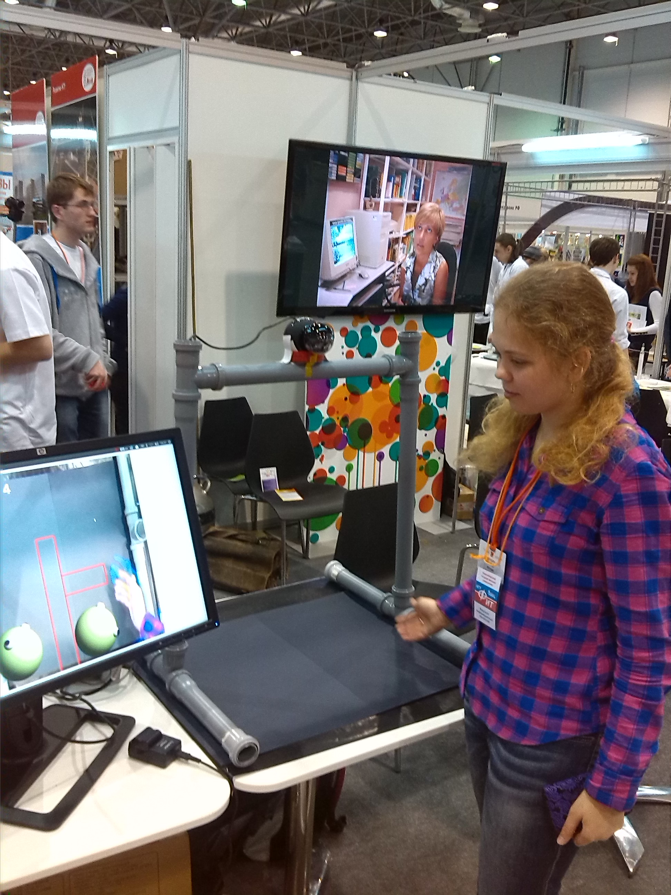
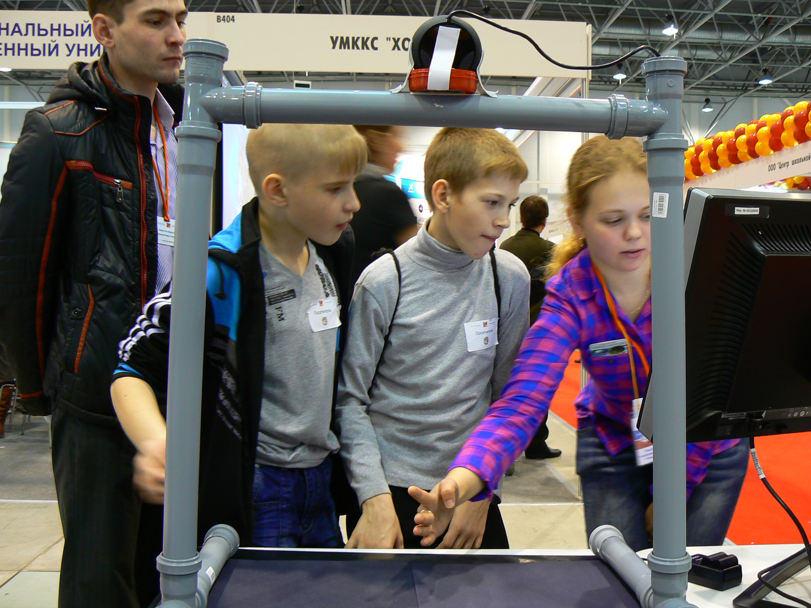
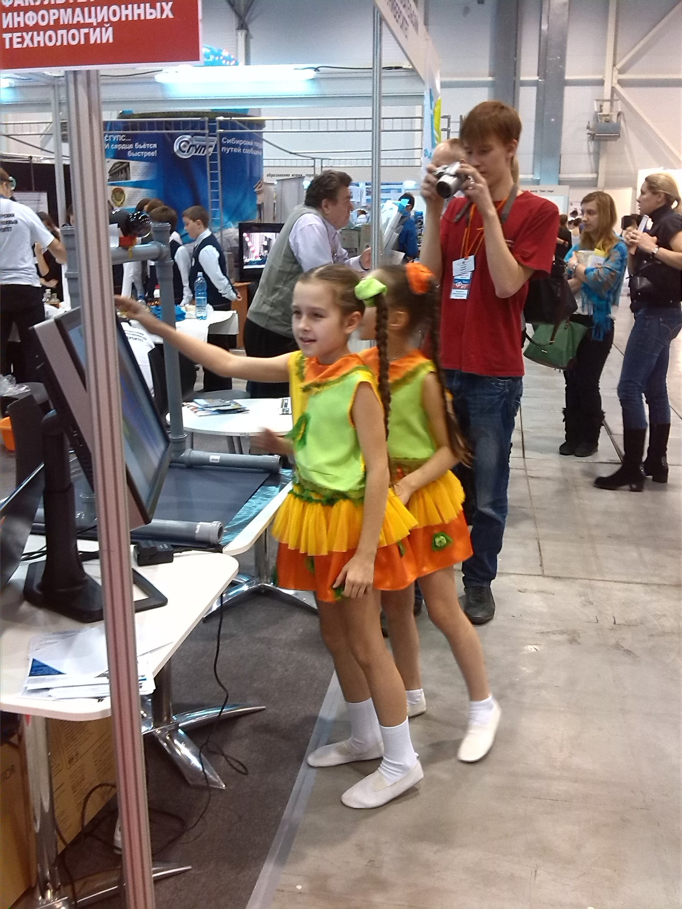
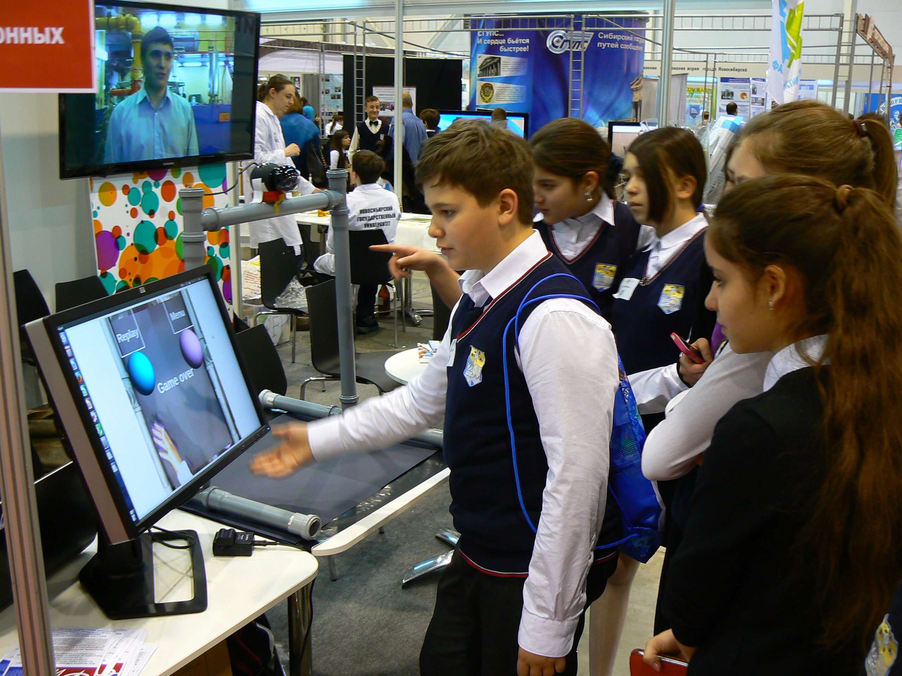
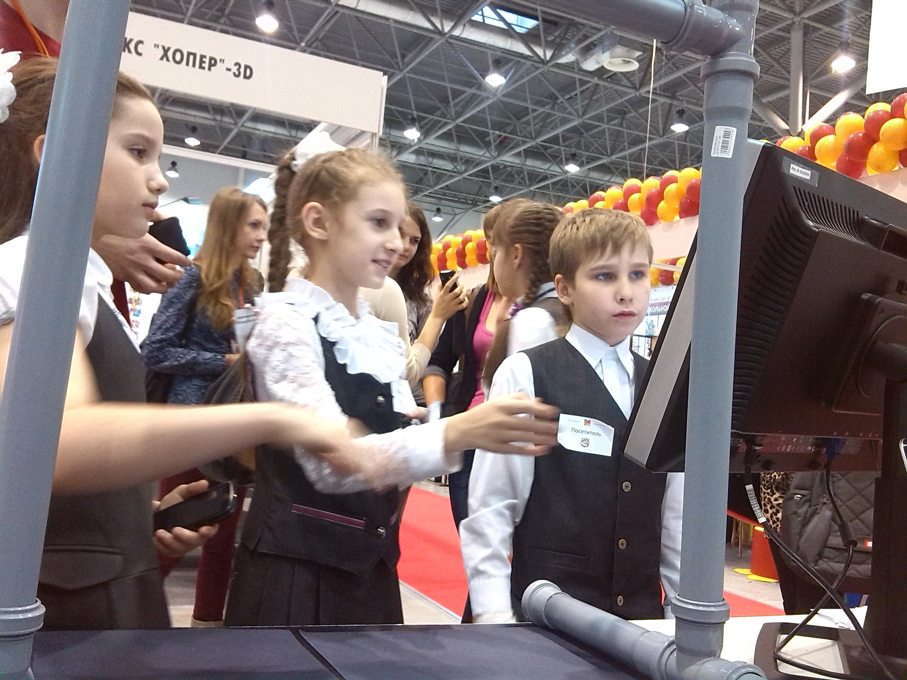
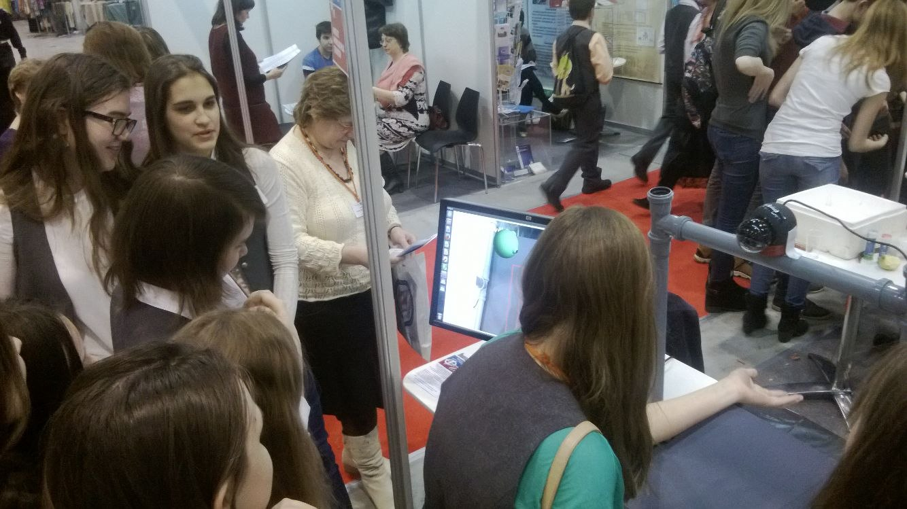
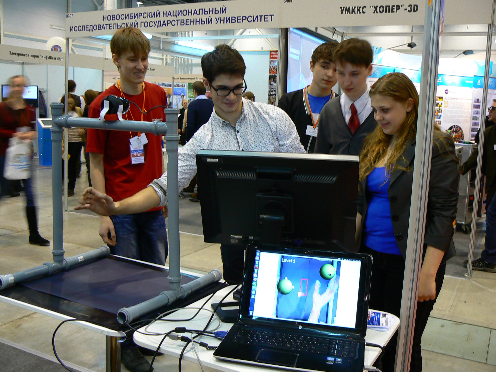
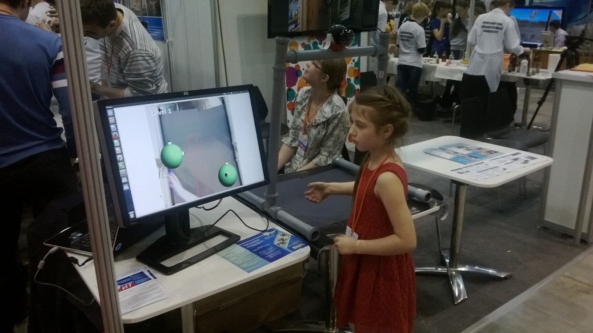
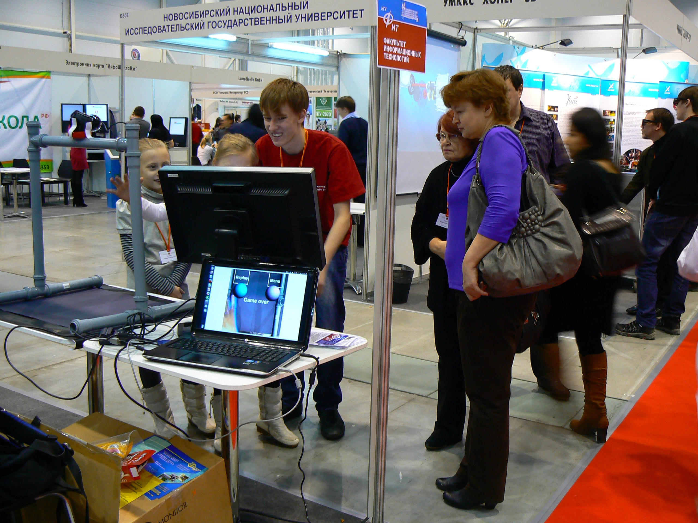
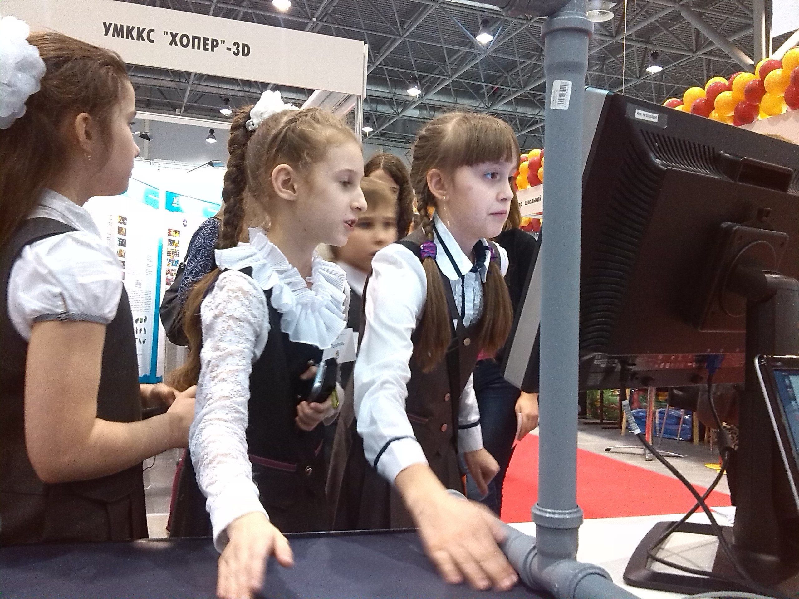
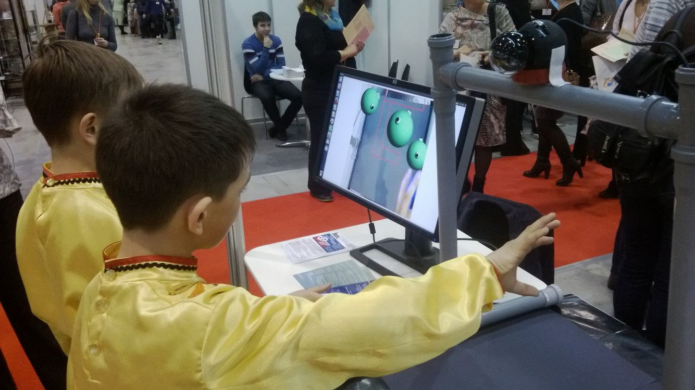